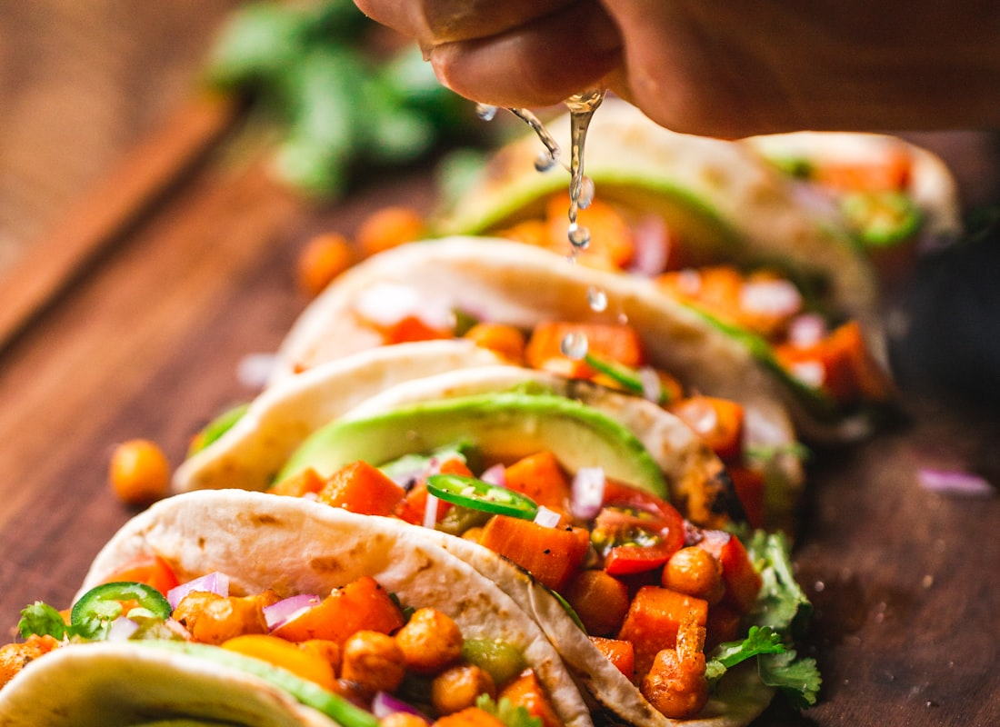
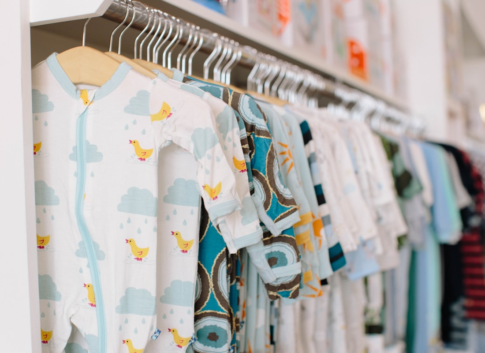

Recipe
Chicken fajita bowls
Peppers, onion, lime, black beans, rice. Mild cumin and paprika. No taco-kit salt bomb.
6 bowls
25 minutes
3–4 days fridge · freeze Friday breakfast bowls



Swipe for more photos.
Ingredients
- 1½ lb boneless, skinless chicken breast, strips
- 2 cups cooked brown rice (from the Sunday pot)
- 1 (15 oz) can no-salt-added black beans, rinsed
- 3 bell peppers, mixed colors, sliced
- 1 large onion, sliced
- 2 tablespoons olive oil, divided
- 3 garlic cloves, minced
- 2 teaspoons cumin
- 1 teaspoon sweet paprika
- 1 teaspoon dried oregano
- ½ teaspoon black pepper
- Pinch of salt
- Juice of 2 limes
- Handful cilantro
- Optional: avocado, sliced when you eat
Steps
- Toss chicken with 1 tablespoon oil, garlic, cumin, paprika, oregano, pepper.
- Hot skillet. Cook chicken in two batches until 165°F. Set aside.
- Same pan: remaining oil, peppers + onion 6–8 minutes until soft with browned edges.
- Return chicken. Add beans, lime juice, cilantro. Toss 1 minute.
- Pack over rice. Avocado only on the day you eat it.
- Reheat with a splash of water, lid on, to 165°F.
Why it fits the week
Rice-beans-peppers, lean chicken, lime instead of a salty packet.